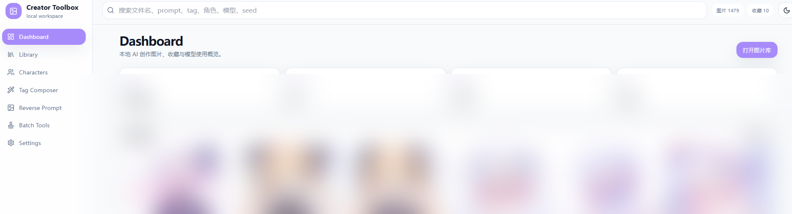
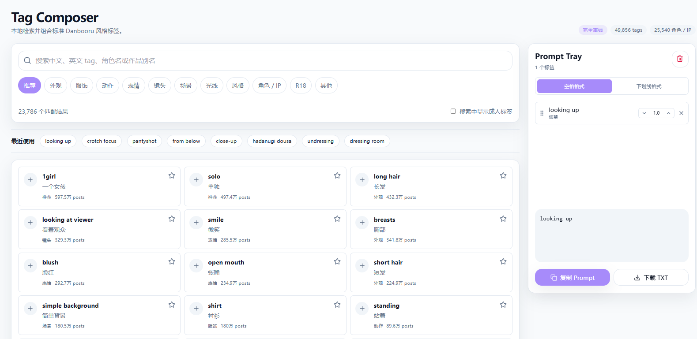
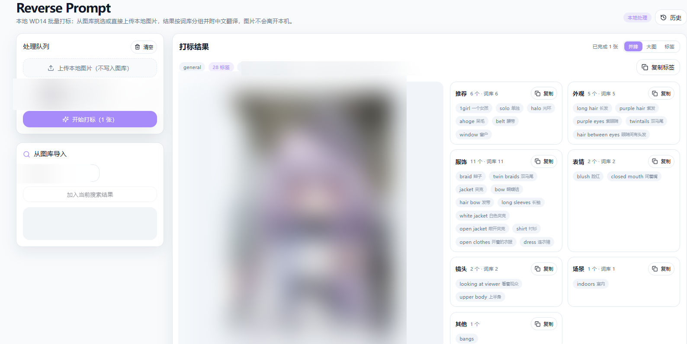

项目概览
我平时会用 Stable Diffusion 和 ComfyUI 生成图片。图片积累多了以后，想找某张图，常常得翻文件夹，还要记得它用过什么模型和参数。Creator Toolbox 就是为了解决这件事：把图片、生成信息、角色和标签放在同一个本地图库里管理。
我主要负责数据模型、后端接口、前端界面和部署链路的设计与实现。这个工具不负责生成图片，重点是把生成之后的整理和查找做好。

问题与约束
一张图可能会有好几轮修改，参数又常常保存在 PNG 元数据里。普通相册看不懂 prompt、seed、LoRA 这些信息；用云端图库的话，图片还得传到别人的服务器上。所以我给项目定了几个限制：
- 图片和元数据留在本机处理，不依赖第三方云图库。
- 保留原图，另外生成 WebP 预览图，浏览时少传一些数据。
- 按自己实际会用的图库规模来做，不只完成一个演示页面。
我做的部分
我用 SQLite 存图片的 prompt、模型、LoRA、采样器、seed 和分区等信息。原图、缩略图和预览图分开放；导入时按内容哈希识别重复文件，避免同一张图被重复收录。
PNG 里的参数有不同的保存格式。我分别解析 tEXt 和 iTXt 数据块，处理 ComfyUI、WebUI 的工作流信息，再把结果拆成字段存到数据库里，之后才方便筛选和查看。
图库按图片卡片浏览，可以按分区、来源、模型、标签和角色筛选、排序，也能批量收藏、改分区、加标签或删除。打开图片详情后，我可以用方向键在当前筛选结果里前后翻，不用每次回列表。
我还接入了 CLIP（clip-vit-base-patch32），给图片计算向量。现在可以输入一段自然语言描述找相近的图，系统按余弦相似度排列结果。
角色归档用“触发词对应角色”的方式处理。我没有做自动语义聚类，而是先用明确的触发词匹配。这样结果比较容易检查；遇到冷门角色时，再手动补触发词。
标签工作台整理了 Danbooru 的近 5 万条标签。我把标签分成外观、服饰、动作、表情、镜头、场景、光线和风格等类别，补上中文翻译，也支持中英文查询。选好的标签可以调权重，再组合成 prompt 导出。

整理旧图时，我会用 WD14 Tagger 在本机批量反推标签。结果按词库分类并带中文翻译，遇到来源或参数不清楚的图片时，能省下一些手工整理时间。

部署时，我用一个 Node.js 进程托管前端并代理 API，再用访问密钥做一道保护。局域网 HTTPS 入口由 Caddy 提供，外网访问走 Cloudflare Tunnel；后端只监听 127.0.0.1，不直接暴露到公网。
几个实现上的选择
模型加载。部署机器连不上 Hugging Face。刚开始每次导入都会等很久，日志里能看到程序反复联网检查模型。失败的加载没有被 lru_cache 缓存，下一张图又会重试一次。
我改成先从本地缓存加载（local_files_only=True），找不到时再尝试联网；加载失败后加冷却时间，避免每张图都等超时。服务启动时也会在后台预热模型和标签词库。
导入速度。剖析后我发现，耗时主要花在两处：解析近 5 万条标签时逐项运行 Python 循环、反复拼字符串；生成预览图时，同一张原图又被完整解码了一遍。
我把标签匹配改成预编译正则，并减少字符串处理；图片只解码一次，JPEG 则用 draft 先降采样。生成预览图和计算 CLIP 向量也放到线程池并行处理。
下面这组数据来自一张 13.4 MB 的图片，由本机直接连接后端测得，不经过公网链路：
- 标签解析从 5.37 秒降到 2.01 秒。
- 服务重启后的首次导入从约 9 秒降到 2.88 秒。
- 稳定运行时单张约 2.1 秒；3 张并行处理共 2.62 秒。
公网传输。项目通过 Cloudflare Tunnel 对外提供访问，上传和下载都遇到过链路问题。
上传时我试过 3 路并发。弱网下每个请求都变慢，还撞上 Cloudflare HTTP 524；失败重试又要重新传文件。我改回串行后，整体吞吐没有变，但单个请求能在超时前结束。后来我加了分段计时，发现上传 6.9 MB 要 123 秒，服务端处理只花 1.1 秒，慢的部分在网络链路，不在后端。
移动端下载也有个问题：点 <a download> 后，浏览器会把下载交给系统，自己的 HTTP/2 连接很快就关闭，页面上进度停在 0 B/s。我试过改用页面内 fetch，虽然能下载，但大文件会先全部读进页面，系统下载管理器也无法管理它。现在我按文件大小分流：超过 32 MB 用浏览器原生下载，小文件用页面内读取。
结果和目前的不足
- 导入、检索、打标和图片翻阅都在自己的图库里跑通过。
- 性能数据来自日志和剖析记录，测试时本机直连后端。
- 写这篇文章时，图库里有 1479 张图片和 40 个角色。
- 目前是自用工具，还没有公开演示环境。
现在还有几个没解决的地方：
- 这里的性能数据是本机直连结果；公网速度还要看隧道带宽。
- 角色归档靠触发词，冷门角色需要我手动补词。
- 工具目前按单人、单机使用设计，还没有并发用户、权限体系和自动备份。
- CLIP 对动漫图片和长句描述的理解有限，语义搜索结果有时不够准。
回头看
我一开始以为导入慢主要是模型推理造成的。实际剖析后，标签解析和图片重复解码才是更明显的耗时；公网传输也一样，分段计时后才看出服务端处理很快，主要时间花在链路上。以后遇到性能问题，我会先把各阶段的时间记下来，再决定要优化哪里。
上传和下载也让我发现，局域网里合适的做法不一定适合公网。并发上传在带宽有限时没有变快，移动端的原生下载行为也和桌面端不一样，需要按实际链路来选方案。
接下来我想给角色归档加可解释的候选推荐，也要补上数据库备份和导出。公网大文件下载则还需要改成流式写盘。
相关项目
GitHub 主页：github.com/qiankezzz
项目涉及 ComfyUI 和 WebUI 的输出格式、CLIP（openai/clip-vit-base-patch32）、WD14 Tagger 与 Danbooru 标签库。